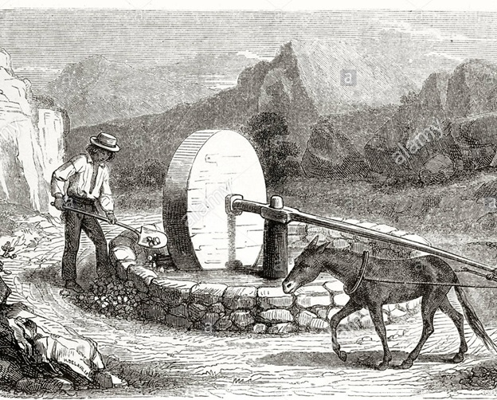

The Donkey Mill
In the field by Plas, there was a donkey driven rotary mill. This was a capstan and a winch, and the donkey walked around it. The mill crushed gorse, an important part of the horses and cows’ diet in the old days.

In the field by Plas, there was a donkey driven rotary mill. This was a capstan and a winch, and the donkey walked around it. The mill crushed gorse, an important part of the horses and cows’ diet in the old days.